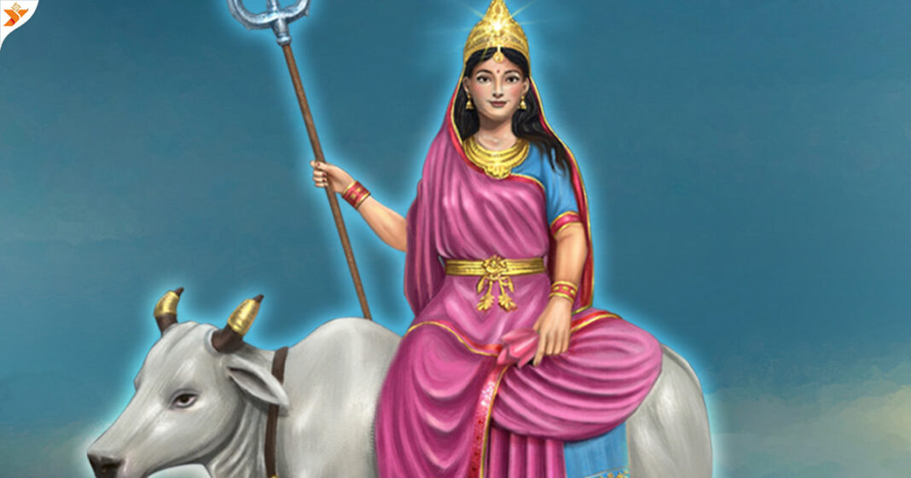

Day8

Navratri Day 8, also known as Durga Ashtami, is considered one of the most important days of the festival. On this day, Goddess Kalaratri is worshipped to remove negativity and dispel darkness1. Another form of Goddess Durga, Maa Mahagauri, is also celebrated on this day, bestowing devotees with wealth and removing sufferings
Go to main page
Go to Day1
Go to Day2
Go to Day3
Go to Day4
Go to Day5
Go to Day6
Go to Day7
Go to Day8
Go to Day9